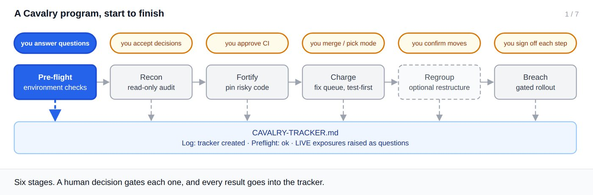

User guide
Cavalry
A phased, gated, test-first program for auditing and fixing a Vercel-hosted project: from a read-only audit to a signed-off production rollout, with you making every decision that matters.

1 / 7
The phases
Pre-flightChecks access, identity, branches, protection, CI and live state, once.you answer questions
1 · ReconRead-only audit: findings, decisions, the queue.you accept decisions
2 · FortifyTests pin risky code; CI becomes required.you approve CI
3 · ChargeOne queue item at a time, test-first, one PR each.you merge or pick a mode
4 · RegroupOptional restructure, proven to be a pure move.you confirm moves
5 · BreachProduction, one signed-off, verified step at a time.you sign off each step
Three guarantees
- Nothing goes live without your go. No phase deploys, changes production config, or merges to your production branch on its own. In Breach every production step waits for its own approval.
- Test first, always. Risky code is pinned by a characterization test before it changes, and every fix starts with a failing test.
- Resumable from the tracker alone. A new session on another machine picks up exactly where the last one stopped.
Requirements
| You need | Why |
|---|---|
| Claude Code with Cavalry registered | The cavalry:* skills must be available. |
| A Vercel-hosted project | The one constant Cavalry assumes; framework and backend are detected. |
git with a GitHub remote, and gh signed in | Every change is a branch and PR; rulesets, required checks, PR state and Mode C use gh. |
| Node.js 20.10+ | The cavalry-* scripts are dependency-free Node programs. |
Deploy values
Every queue item says what production needs beyond merging code, and in what order. The value travels into the PR's Rollout section, Rally Points, and Breach's runbook.
| Value | Meaning | Example |
|---|---|---|
code-only | Merging is the whole change | Fix a null check |
rules-after-code | Rules deploy after the code is live | Rules expecting a field the new code writes |
rules-before-code | Rules deploy before the code | Code relying on a new permission |
console-config | A manual console setting | Turn off open sign-up |
none | No production effect | Add a CI workflow |
Also availableas a 40-page Word document with the full phase reference, recipes, glossary and appendices: download cavalry-user-guide.docx.